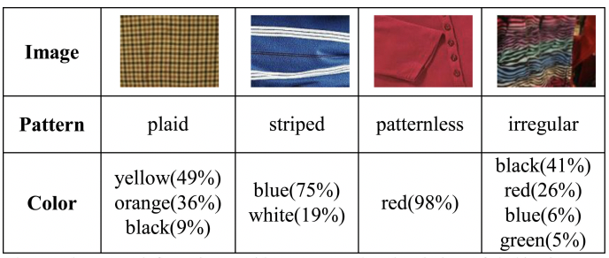
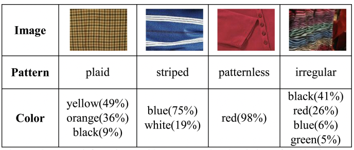

Pattern Recognition
Model 1:
A first approach works by extracting both global (RadonSig) and local features (SIFT) of clothing images, as well as “statistics of wavelet sub-bands (STA)” in order to evaluate the complementary relationships between the different feature channels [1]. These extracted features are combined to recognize clothing patterns through a method of supervised learning known as support vector machines (SVM) classifier. This system is then evaluated on a dataset of image patterns, categorized as either plaid, striped, patternless, horizontal/vertical, and irregular [2]. From the database, a training set is selected as a fixed-size random subset of each category, while the remaining images are used as the testing set. With this combination, a 92.55% recognition accuracy was achieved.
Additionally, clothing color recognition is implemented by quantizing the normalized color histogram of each clothing image in the HSI (hue, saturation, and intensity) color space. More specifically, “for each clothing image, [this] color identification method quantizes the pixels in the image to the following 11 colors: red, orange, yellow, green, cyan, blue, purple, pink, black, grey, and white” [1]. In cases where multiple colors are present, it will output only the dominant colors, which are described as filling more than 5% of the entire image. Both “the clothing patterns and colors mutually provide complementary information, the recognized patterns provide additional information about how different colors are arranged” [1].
 

Source: https://ieeexplore-ieee-org.proxylib.csueastbay.edu/document/6739993
Model 2:
A second approach classifies clothing items and can identify a variety of attributes, such as type, pattern, and texture. This system enhances FashionNet, “a deep model that learns clothing characteristics by predicting garment qualities and categories together” [3]. FashionNet uses a convolutional deep net, capable of performing multi-class, multi-label classification, in which each clothing article can have one or more clothing attributes attached to it [4]. In order to improve accuracy, the VGG16 design (a convolutional neural network that is sixteen layers deep) which was originally used in FashionNet was replaced by ResNet34 architecture (a thirty-four layer convolutional neural network for image classification). In training, the Deep Fashion dataset was used due to its diversity in clothing categories and descriptive attributes [3]. During evaluation, it was shown that the performance of this model outperformed the rest in terms of accuracy (see below).

Source: https://ieeexplore-ieee-org.proxylib.csueastbay.edu/document/9820475